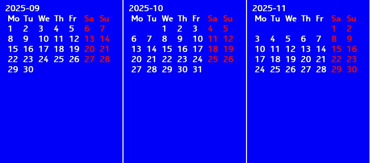

Basic app to generate calendar for MRE platform mobile phone (including Nokia S30+). Tested on Nokia 225 with display resolution 240x320. KEY_LEFT previous month, KEY_RIGHT next month, RIGHT_SOFTKEY - exit app. For using with Nokia mobile phone, app must be signed with IMSI (your SIM card) code. https://vxpatch.luxferre.top. Application file - "mre_calendar.vxp".
